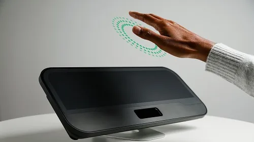

Haptic gloves and exoskeletons
These devices track finger movement (input) and resist it with motors, cables or pneumatic actuators (output), so you can feel the shape and stiffness of a virtual object. They are used in virtual reality and training. Most are still research prototypes, and even commercial gloves are bulky and limited in force, typically to around 10 newtons for safety.


Mid-air ultrasound haptics
A phased array of ultrasonic speakers fires waves timed to arrive at the same point in space. At that focal point the pressure is strong enough to be felt on bare skin[1], and a hand-tracking camera keeps the point on your hand. Modulating the ultrasound (typically at 40 kHz) creates vibrations the skin can detect, and moving the point creates shapes and buttons in mid-air. A 2008 device by Iwamoto and colleagues is usually cited as the first of this kind[2], and the technology was later commercialised by Ultrahaptics, a University of Bristol spin-out now called Ultraleap.

Thermal feedback
Researchers combine Peltier elements, which heat or cool when current flows through them, with pneumatic or mechanical actuators. The goal is to add temperature to pressure and force so that virtual objects also feel hot or cold. This is still mostly laboratory work.
Open challenges
Gloves are heavy, pneumatic systems can react slowly, and no single device yet delivers force, texture and temperature at once. Closing that gap is the main aim of current haptics research.